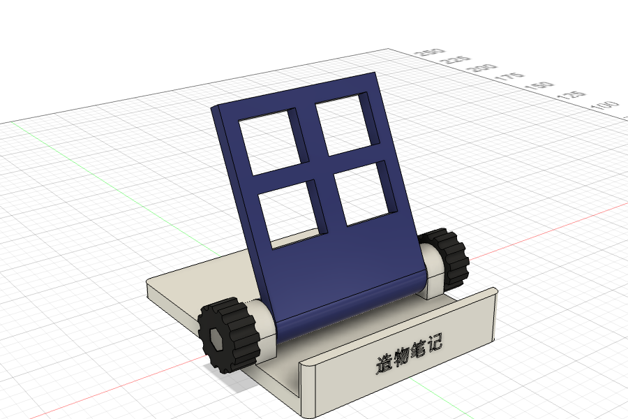
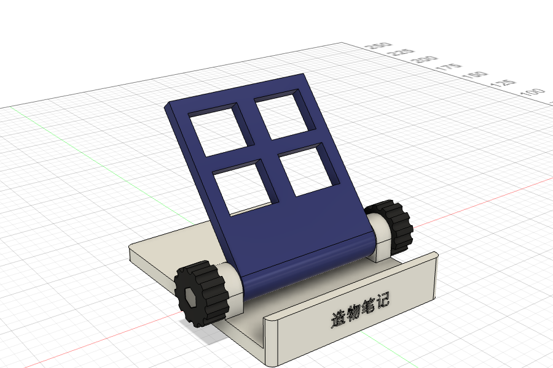
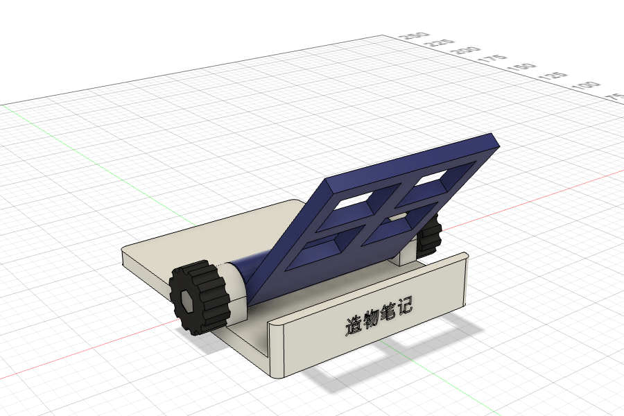

P0 项目介绍
Quickstart 的实战项目：一个可以折叠、能调角度的桌面手机支架。它由底座、靠背、旋钮、螺丝螺母几个零件组成，靠背绕铰链转动，拧紧旋钮就能固定角度。做完可以直接 3D 打印出来用。这一页先看成品、零件和制作路线。
成品#



三张图都是在 Fusion 里拖动铰链得到的。靠背能转动的范围在 Fusion 里设成了 −65°～+15°（P8 讲）。
它由哪些零件组成#
| 零件 | 数量 | 作用（大白话） | 主要用到的操作 |
|---|---|---|---|
| 底座 | 1 | 平放在桌上。前面一条挡边托住手机；后面左右两个“耳朵”是铰链的一半；中间有一条充电线槽，从挡边下面绕到底座背后 | 草图、尺寸、拉伸、镜像、孔、圆角、扫掠、文字 |
| 靠背 | 1 | 手机靠在上面。下端是一个圆筒，夹在两个耳朵中间；板上开了 4 个窗口减轻重量 | 新建零部件、拉伸（对称）、矩形阵列 |
| 旋钮 | 2 | 装在两侧，一圈防滑槽方便拧；里面有六角形的凹槽，卡住螺丝头 | 旋转、环形阵列、多边形 |
| M4×20 螺丝 + 螺母 | 各 2 | 铰链的轴。螺母卡在靠背两端的六角孔里 | 标准件库 / 简化建模、镜像零部件 |
主要尺寸#
| 尺寸 | 数值 | 说明 |
|---|---|---|
| 底座 | 80 × 100 × 6 mm | 宽 × 深 × 厚。宽度做成参数 w，改成 160 就是平板支架 |
| 前挡边 | 高 12 mm，厚 4 mm | 托住手机下边 |
| 铰链 | 轴心离桌面 14.4 mm，离前边 35 mm | 耳朵宽 8 mm，圆筒半径 8 mm |
| 靠背 | 宽 63.2 mm，长 70 mm，厚 5 mm | 宽度 = 底座宽 − 两个耳朵 − 两边各 0.4 mm 间隙 |
| 旋钮 | 直径 22 mm，厚 9 mm | 12 道防滑槽 |
| 螺丝孔 | 直径 4.4 mm | M4 螺丝直径 4 mm，孔大 0.4 mm 才穿得进去 |
制作路线#
| 页 | 做什么 | 学会什么 |
|---|---|---|
| P1 | 新建设计，设置参数 | 设计类型、保存与版本、用户参数 |
| P2 | 底座：底板、挡边、铰链耳、孔、圆角 | 零部件、在面上建草图、合并、镜像、孔、圆角 |
| P3 | 插头槽和充电线槽 | 剪切、构造平面、扫掠、截面分析 |
| P4 | 靠背 | 对称拉伸、矩形阵列 |
| P5 | 旋钮 | 旋转、环形阵列、多边形 |
| P6 | 螺丝与螺母 | 标准件库、复制零部件 |
| P7 | 刻字与外观 | 文字、剪切刻字、外观 |
| P8 | 联接与运动 | 固定、快速联接（旋转）、角度限制、刚性组、运动分析 |
| P9 | 检查与修改 | 干涉、测量、改参数 |
| P10 | 导出 | F3D、STEP、3MF / STL，成品文件下载 |
需要准备#
- 装好 Fusion 并登录（第 0 章）；最好有一个三键鼠标。
- 想真的做出来的话：一台 3D 打印机（或者找打印服务），两颗 M4×20 内六角或外六角螺丝 + 两颗 M4 螺母（五金店、网店都有）。